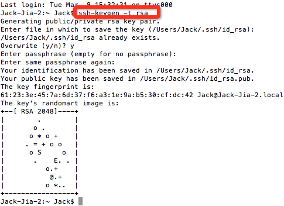
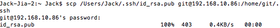
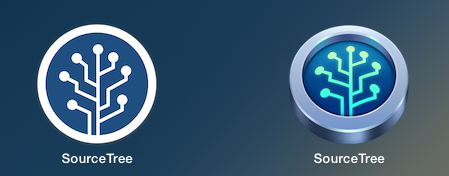
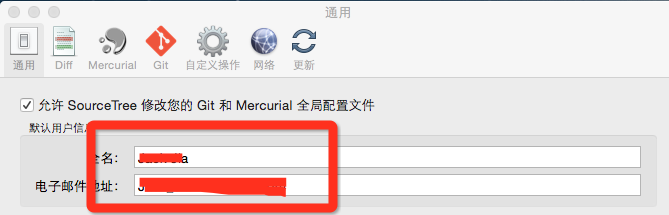
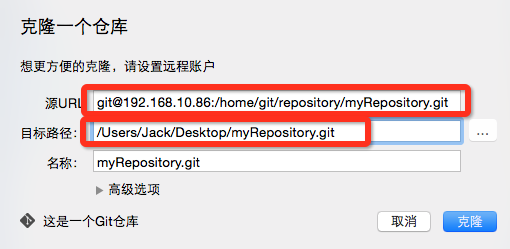
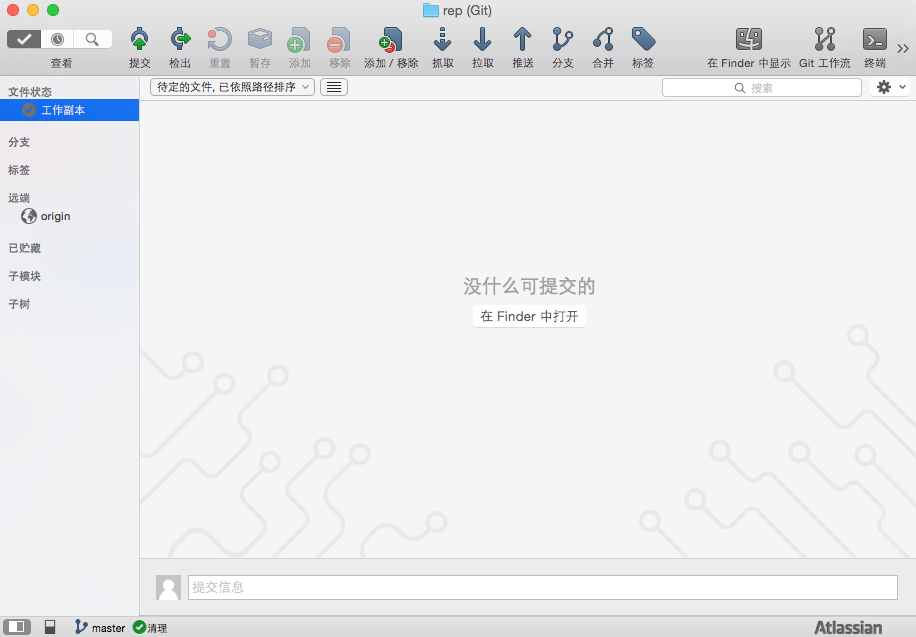
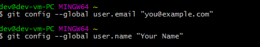
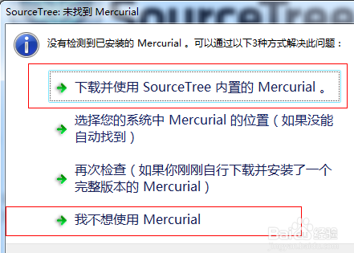

您现在的位置是：首页>Git专题
Git客户端配置及使用
Git是一个开源的分布式版本控制系统，用以有效、高速的处理从很小到非常大的项目版本管理。
分布式相比于集中式的最大区别在于开发者可以提交到本地，每个开发者通过克隆（git clone），在本地机器上拷贝一个完整的Git仓库。
从一般开发者的角度
1、从服务器上克隆完整的Git仓库（包括代码和版本信息）到单机上。
2、在自己的机器上根据不同的开发目的，创建分支，修改代码。
3、在单机上自己创建的分支上提交代码。
4、在单机上合并分支。
5、把服务器上最新版的代码fetch下来，然后跟自己的主分支合并。
6、生成补丁（patch），把补丁发送给主开发者。
7、看主开发者的反馈，如果主开发者发现两个一般开发者之间有冲突（他们之间可以合作解决的冲突），就会要求他们先解决冲突，然后再由其中一个人提交。如果主开发者可以自己解决，或者没有冲突，就通过。
8、一般开发者之间解决冲突的方法，开发者之间可以使用pull 命令解决冲突，解决完冲突之后再向主开发者提交补丁。
从主开发者的角度（假设主开发者不用开发代码）看，git有以下功能：
1、查看邮件或者通过其它方式查看一般开发者的提交状态。
2、打上补丁，解决冲突（可以自己解决，也可以要求开发者之间解决以后再重新提交，如果是开源项目，还要决定哪些补丁有用，哪些不用）。
3、向公共服务器提交结果，然后通知所有开发人员。
操作文档
客户端: Mac OS X Yosemite 软件: git , SourceTree
一.生成密钥给管理员
(1)在开发机上使用命令生成密钥
ssh-keygen -t rsa

成功后会在用户目录生成.ssh文件(.ssh为隐藏文件)
.ssh文件中可以看到id_rsa和id_rsa.pub两个文件.
id_rsa.pub为公钥文件
(2)通过scp发送到服务器或者邮箱直接发给管理员
scp /Users/Jack/.ssh/id_rsa.pub git@192.168.10.86:/home/git/.ssh

二.安装git
安装Homebrew:
ruby -e "$(curl -fsSL https://raw.githubusercontent.com/Homebrew/install/master/install)"
安装git:
brew install git
完成安装需设置邮箱和用户名
git config --global user.email "you@example.com"
git config --global user.name "Your Name"
三.工具: SourceTree

(1)下载安装SourceTree
(2)sourceTree设置中添加用户

(3)新仓库—从Url克隆(从管理员处获取)
通过url克隆仓库到桌面


客户端: windows 7
软件: git , SourceTree
一.下载git并安装:
1.下载地址:
https://git-for-windows.github.io
2.安装完成需要在Git Bash中
设置邮箱和用户名
git config --global user.email "you@example.com"
git config --global user.name "Your Name"

二.获取ssh key值发送管理员
1.在git bash 下生成key
2通过scp发送到服务器或者邮箱直接发给管理员
scp /Users/Jack/.ssh/id_rsa.pub git@192.168.10.86:/home/git/.ssh
三.下载安装sourceTree
1.下载
https://www.sourcetreeapp.com/download/
需要运行库(建议去网上下载安装,原代的很慢)
Microsoft .NET Framework 4.5
安装完成打开会弹出 选最后一个

2.打开sourceTree
工具-选项,弹出选项卡第三个git选项，使用系统git
在一般中选择刚生成的密钥(步骤二)
写博文不易,转载请注明:
本文作者:Jack Jia
微博: 筑梦小丑_Dream
博客地址http://blog.csdn.net/jackjia2015